1967
The family started curing fish
The first drying racks were at home, for the family. Fish from the Tsimlyansk reservoir.
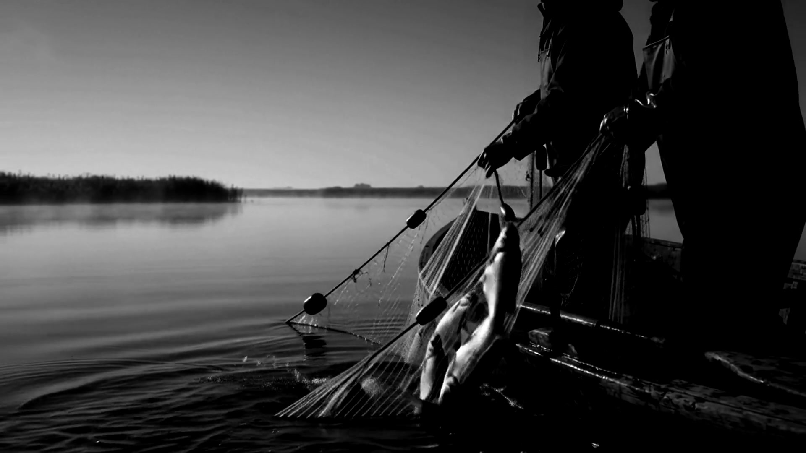
Volgodonsk · since 1967
Tsimla · raw material
One water
All our river fish comes from the Tsimlyansk reservoir. We use no other river fish.
From home drying racks to climate control
1967
The first drying racks were at home, for the family. Fish from the Tsimlyansk reservoir.
2003
The family method becomes a workshop: a registered business, paperwork, GOST-compliant packaging.
2005
We freeze the raw fish at −20 °C. The standard only calls for −18.
2007
Computers now watch the climate. Production stops depending on the weather: salting can happen year-round, not only in spring.
2008
On 25 August 2008, Channel One filmed a segment about the workshop. The recording is below.
2026
The same rule as in 1967: salt in the gills, the cellar at +8 °C, exactly two days in the drying room. The business turns sixty in 2027.
Thirty-five seconds · staged footage, 2026
Aired 25 August 2008 · report by Yulia Pogorelova
"Klevtsov's father taught him how to cure fish"
Stills from the Channel One broadcast, 25.08.2008
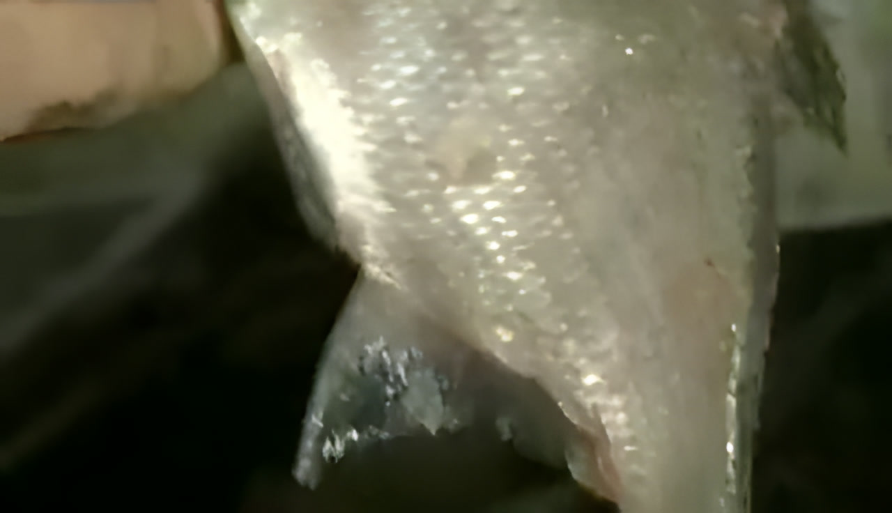
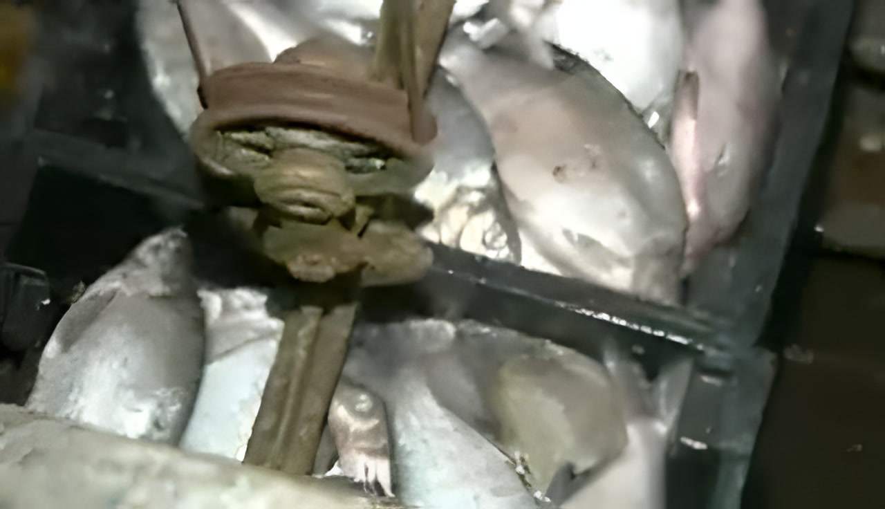
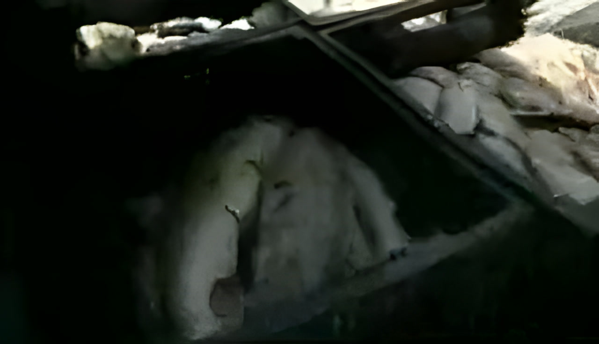
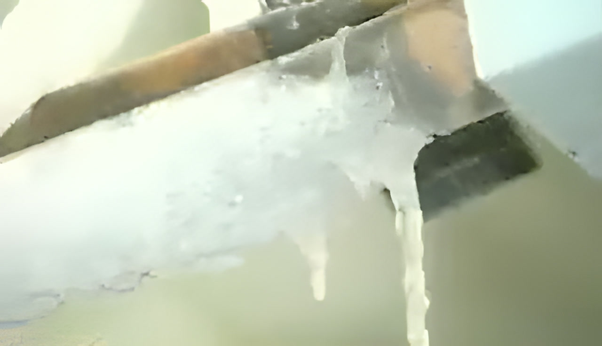
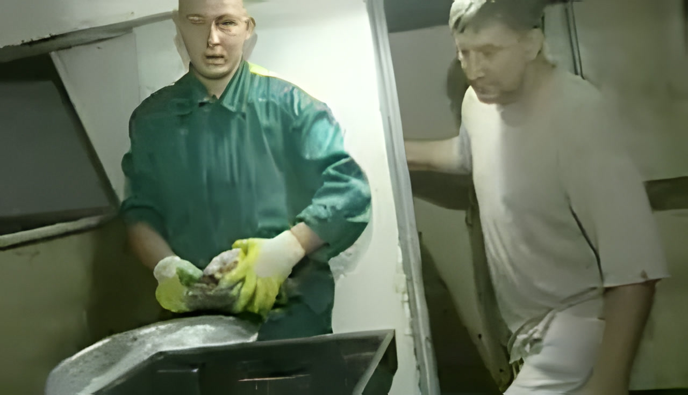
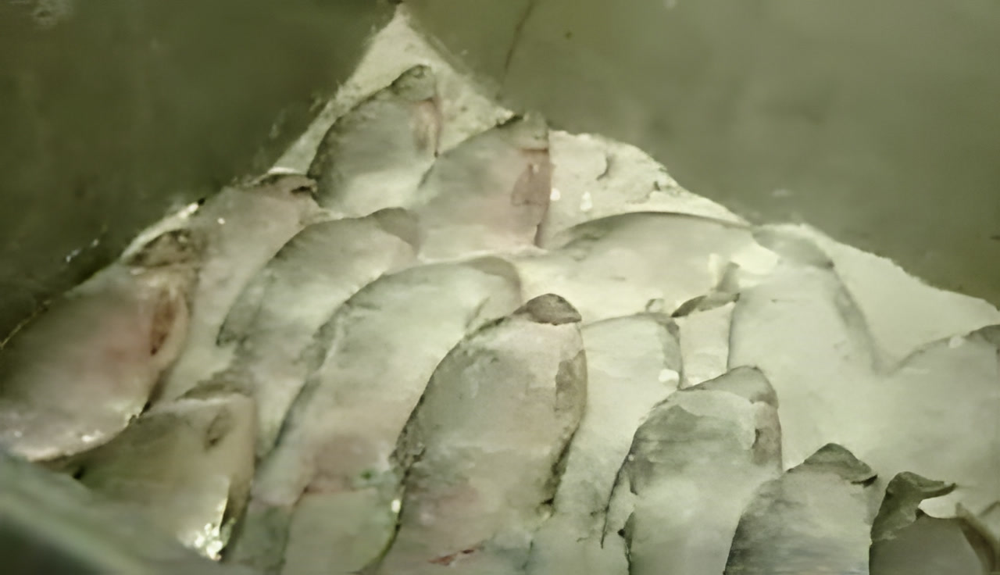
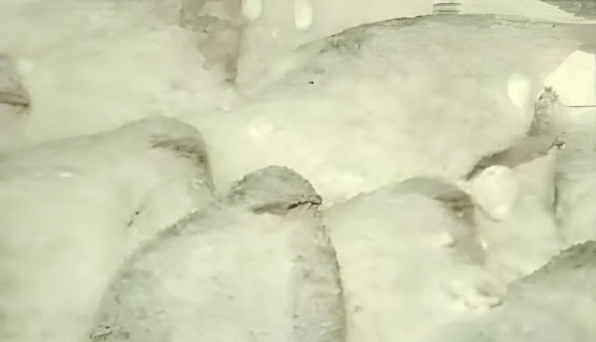
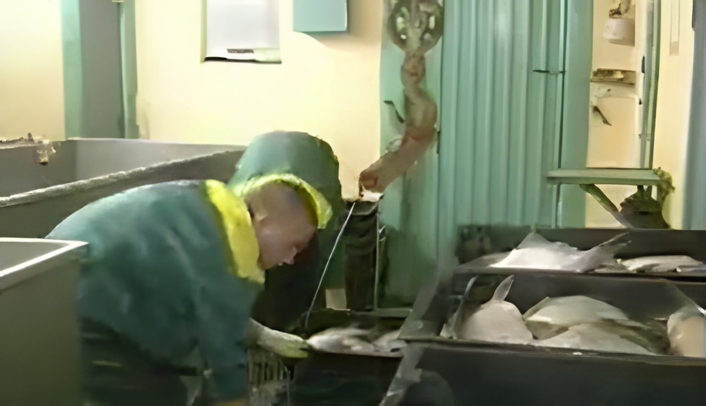
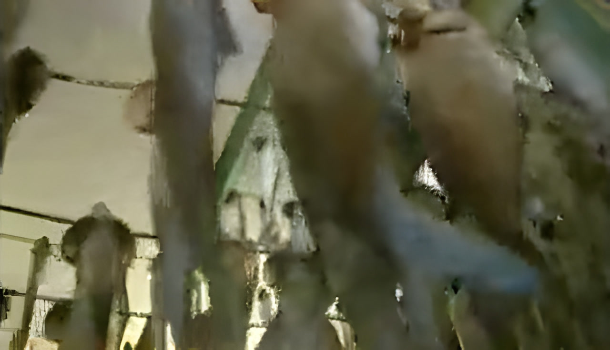
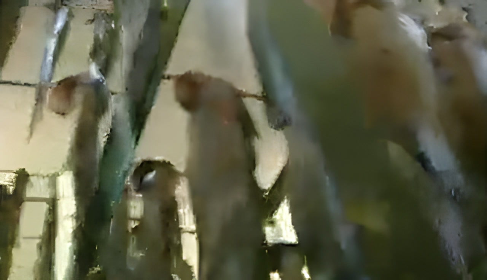
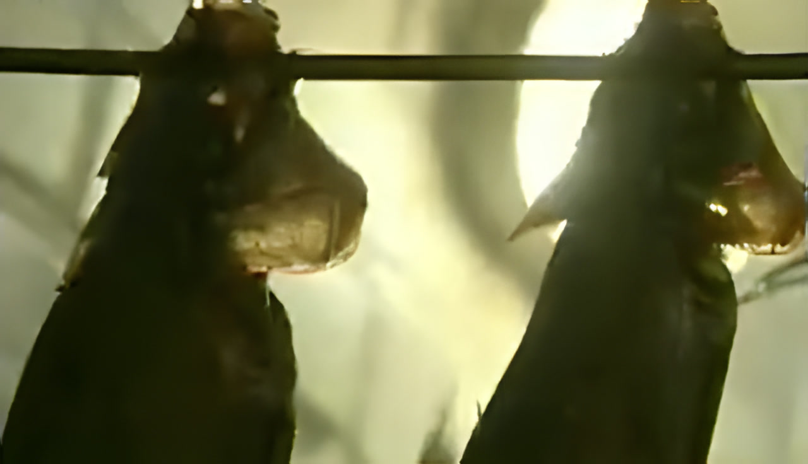
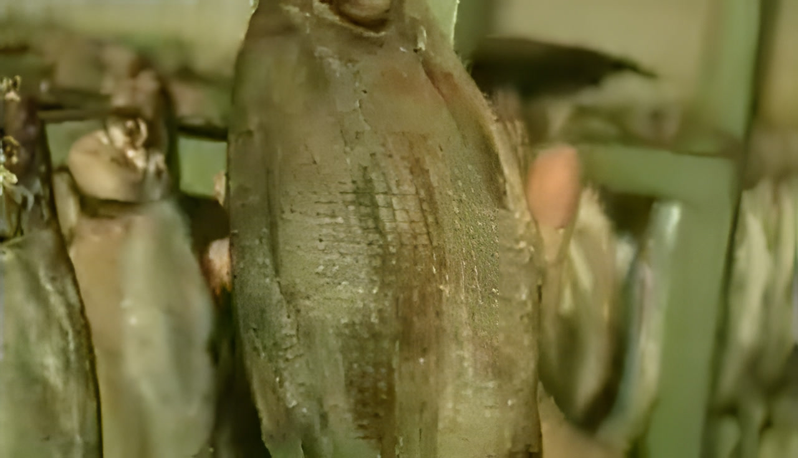
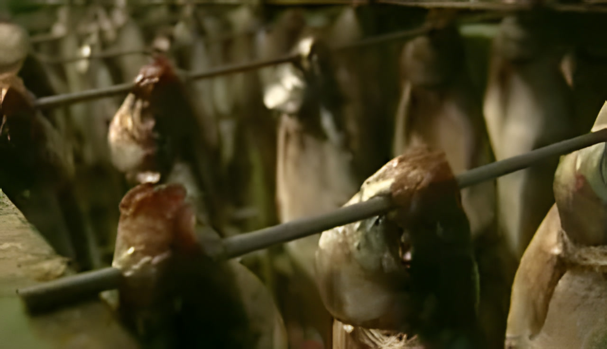
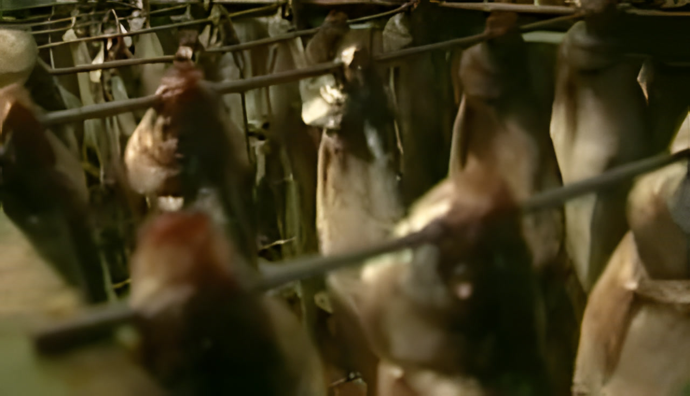
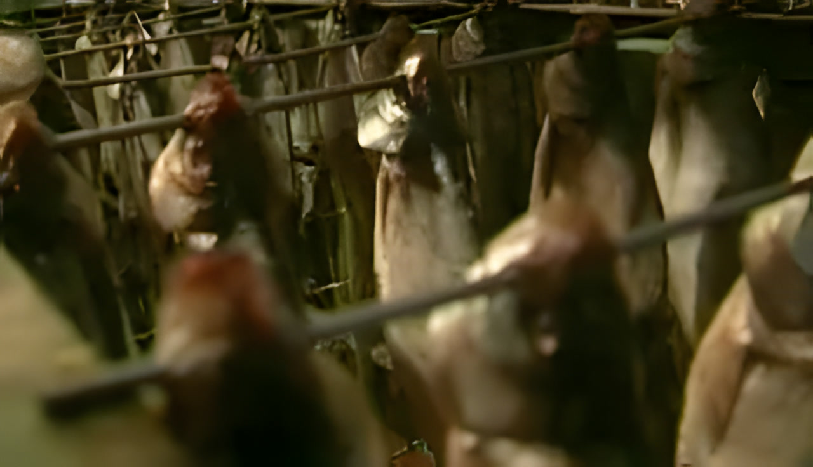
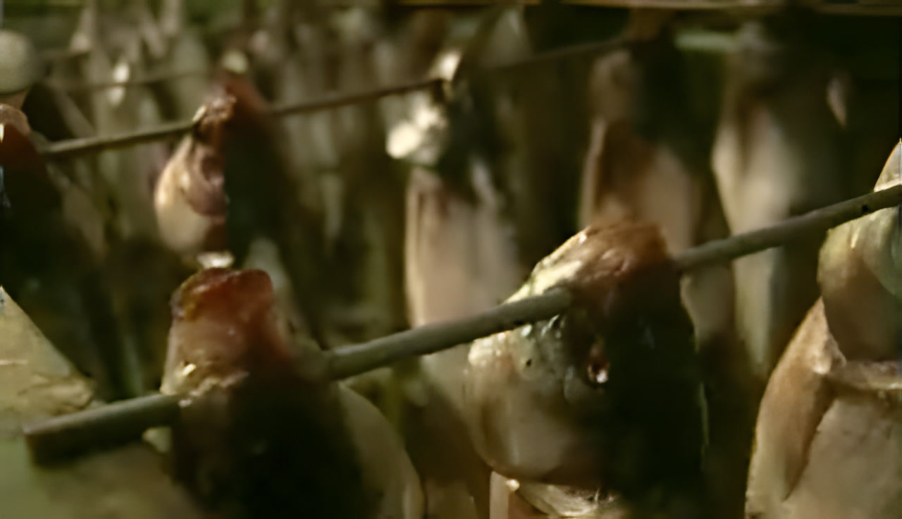
16 stills from the broadcast · receiving, salt, curing, racks, drying room
Same method. Equipment that holds the process steady all year
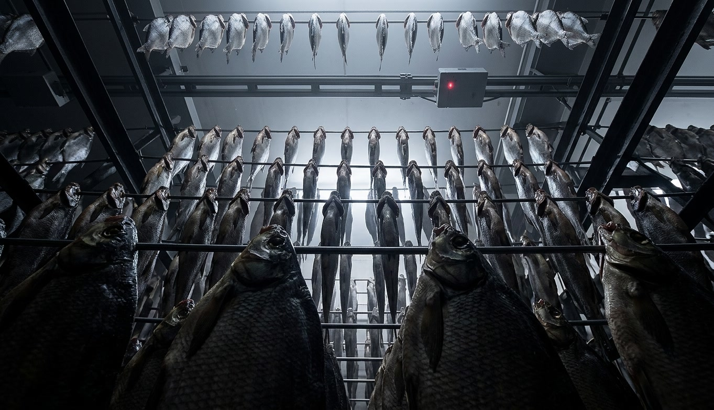
All our river fish comes only from the Tsimlyansk reservoir.
Frozen before salting. The standard is −18.
In the cellar, an old recipe. Salt is packed into the gills.
Exactly two days. Not one and a half, not three.
50 items, wholesale and retail in one line. Wholesale from 100 kg.
See the price list